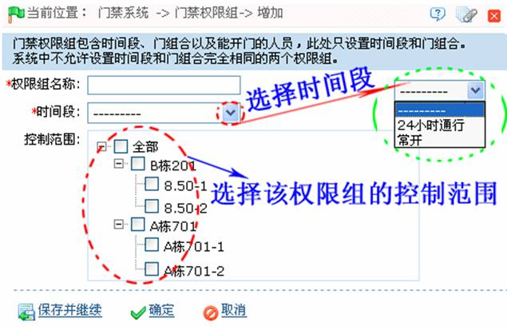

6.4 门禁权限组
门禁权限组即在某个特定的时间段范围内，哪个门或哪些门的组合是可以通过验证打开的。而可以验证打开这些门的人员组合，需要在人员门禁权限设置中完成，请参见6.5 人员门禁权限设置。
新增门禁权限组：
1、单击【门禁】 【门禁权限组】
【门禁权限组】 【新增】，进入新增门禁权限组页面：
【新增】，进入新增门禁权限组页面：

根据需要设置各参数，具体设置方法如下：
权限组名称：输入门禁权限组名称。
时间段：单击按钮，在弹出的门禁时间段下拉框中，选择时间段。（门禁时间段的设置，请参见6.1 门禁时间段。）
控制范围：选择该门禁权限组的控制范围。
2、设置完成后，单击【确定】按钮，保存并返回门禁权限组页面，此时门禁权限组列表中将显示刚新增的门禁权限组。
（1）、权限组名称不可重复；
（2）、选择门禁权限组中的门为多选，即可以选择不同控制器中的不同门；
（3）、系统中不允许存在时间段和门组合完全相同的两个门禁权限组。